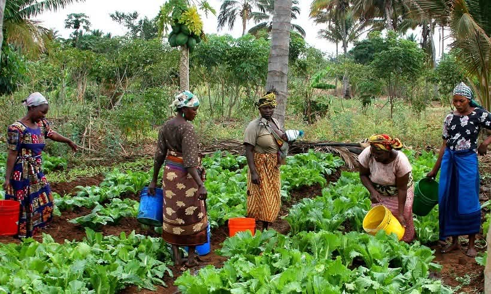
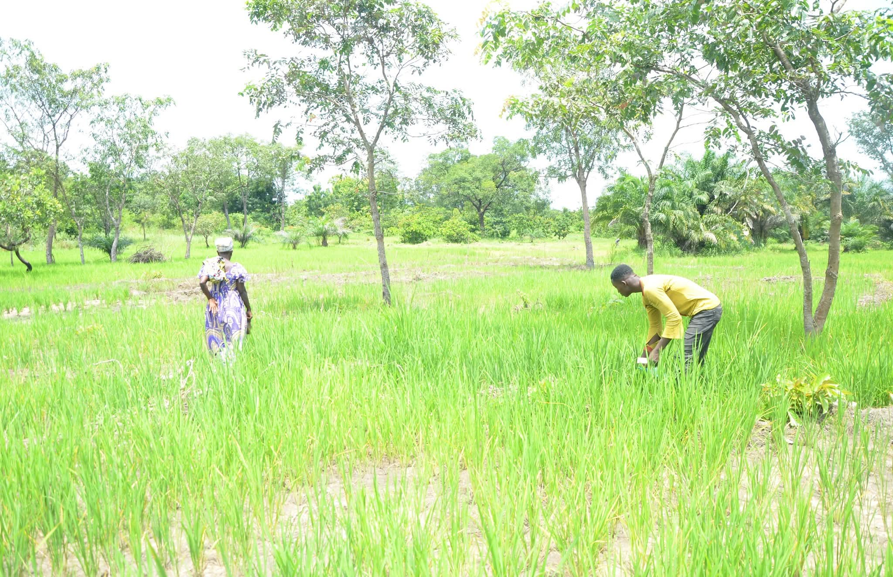
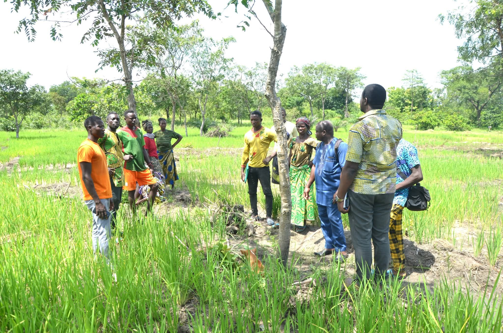
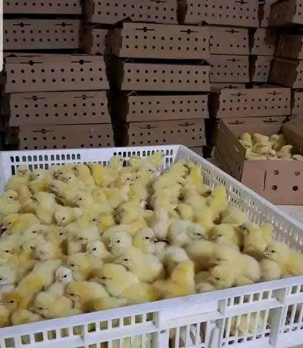
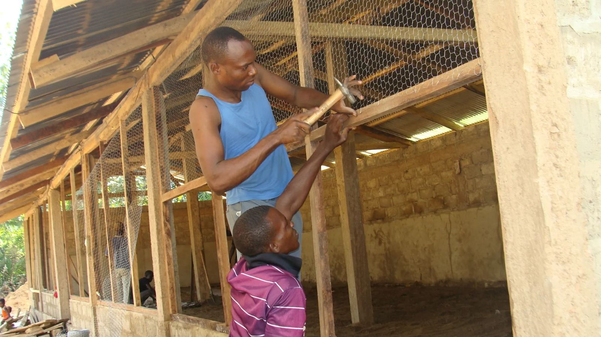
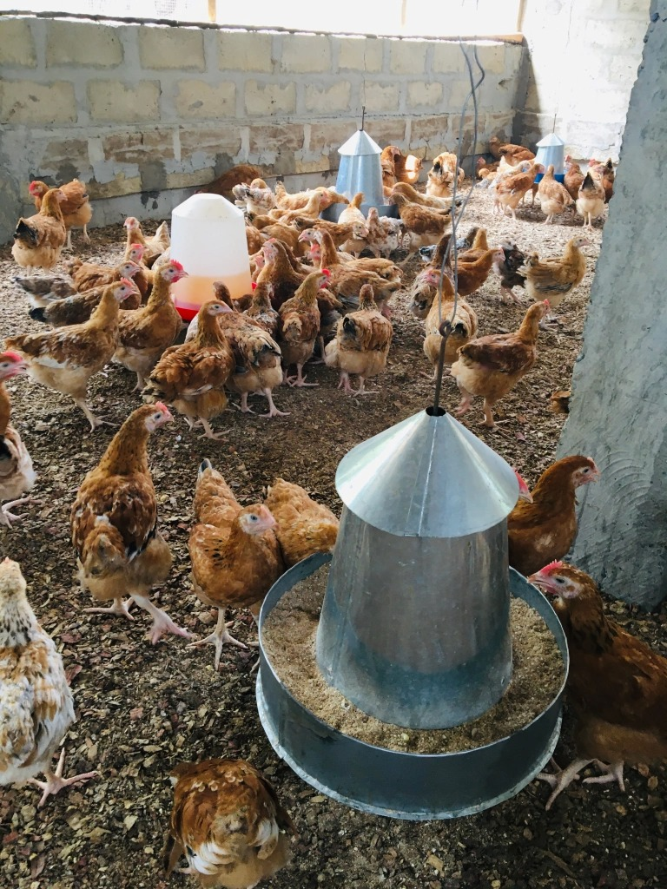
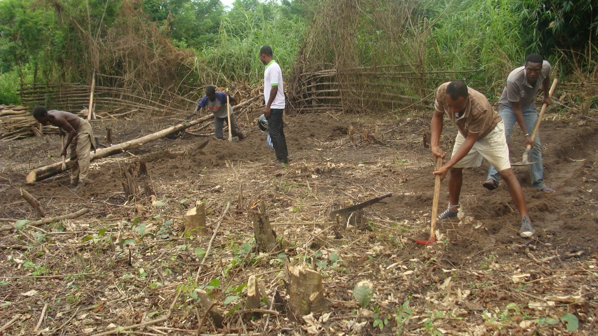
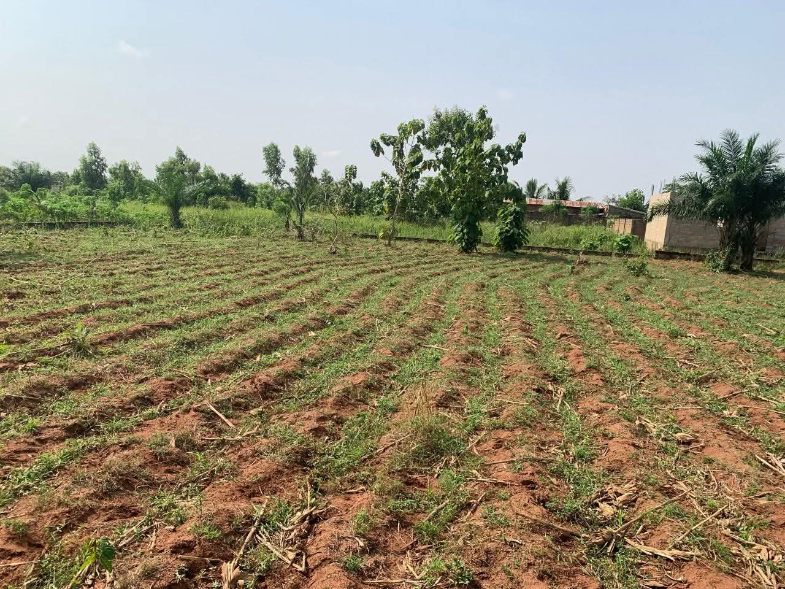
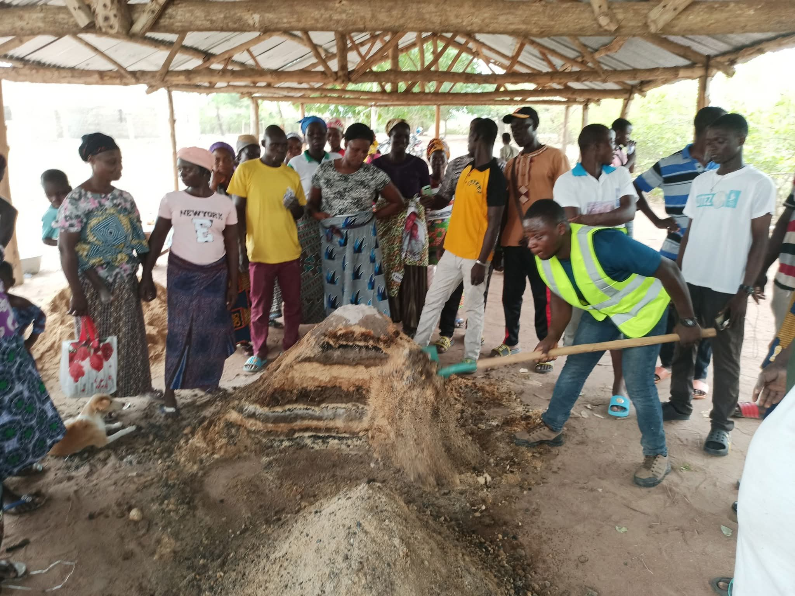

In questa sezione vengono presentati tutti i progetti dello Sviluppo Economico che abbiamo realizzato nel corso degli anni passati.
2023: Percorso di formazione in fabricazione di fertilizzanti naturali per le gli agricoltori del Cantone di Bolou
2022: Raforzzamento delle capacità organizzative e produttive delle donne del villaggio di Owoudjié
2021: Formazione in agricoltura biologica per le donne del comune di Ogou 1.
Sviluppo economico e rafforzamento delle capacità locali
La nostra associazione promuove lo sviluppo economico sostenibile attraverso percorsi di formazione e rafforzamento delle competenze, con particolare attenzione alle donne e agli agricoltori. Crediamo che l’autonomia economica sia un elemento fondamentale per il progresso delle comunità locali.
2021 – Formazione in agricoltura biologica Comune di Ogou 1 – Togo
Nel 2021 abbiamo organizzato una formazione in agricoltura biologica rivolta alle donne del Comune di Ogou 1.
Obiettivi del progetto:
• Promuovere tecniche agricole sostenibili e rispettose dell’ambiente.
• Migliorare la qualità e la produttività delle coltivazioni.
• Favorire l’autonomia economica femminile.
Le partecipanti hanno acquisito competenze pratiche sulla gestione del suolo, l’uso di fertilizzanti naturali e le tecniche di coltivazione biologica, contribuendo così a una produzione più sana e sostenibile.
2022 – Rafforzamento delle capacità organizzative e produttive Villaggio di Owoudjé – Togo
Nel 2022 abbiamo realizzato un ciclo di corsi dedicati alla comunicazione, all’organizzazione del lavoro e alla gestione economica.
Obiettivi del progetto:
• Migliorare le capacità organizzative dei gruppi locali.
• Rafforzare le competenze nella gestione delle attività produttive.
• Promuovere una maggiore autonomia nella pianificazione economica.
Il percorso ha permesso ai partecipanti di strutturare meglio le proprie attività e di sviluppare una visione più strategica delle iniziative economiche locali.
2023 – Formazione sulla produzione di fertilizzanti naturali Agricoltori locali
Nel 2023 abbiamo organizzato un percorso formativo sulla fabbricazione di fertilizzanti naturali per i pollai e le attività agricole.
Obiettivi del progetto:
• Ridurre la dipendenza da fertilizzanti chimici costosi.
• Valorizzare le risorse locali disponibili.
• Migliorare la fertilità del suolo in modo sostenibile.
La formazione ha fornito strumenti pratici per la produzione autonoma di fertilizzanti naturali, favorendo una gestione agricola più economica ed ecologica.
Attraverso questi interventi continuiamo a sostenere la crescita economica delle comunità, promuovendo competenze, autonomia e sviluppo sostenibile.








